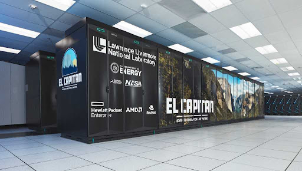
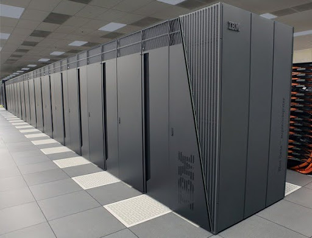
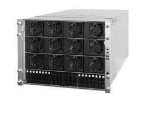
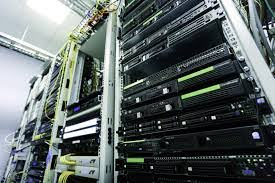
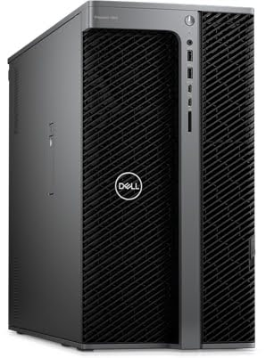
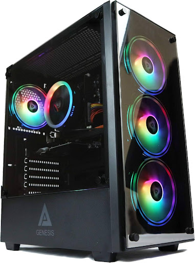
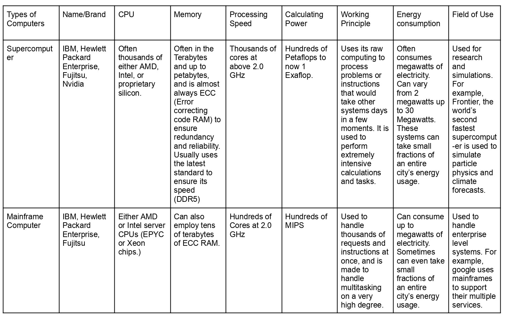

Types of Computers
A computer is an electronic device that takes an input of data, and follows a set of instructions to achieve a desired result or output. It can take many shapes and forms, sizes and weights. From fitting in your hand, to taking comprising entire complexes, computers vary in many different aspects. Generalizing broadly, computers can be categorized into 6 distinct categories. Namely, they can either be supercomputers, mainframes, minicomputers, workstations, servers, workstations, or microcomputers.
Supercomputers
A supercomputer is a system that utilizes cutting edge technologies and hardware that allows it to perform extremely intensive calculations, often performing quadrillions of calculations a second. A Supercomputer usually spans an entire complex, with multiple cabinets filled with hardware. These computers often take up whole percentages of power usage of a given area, as the CPUs and especially GPUs in these systems guzzle electricity to compute.

Mainframe Computers
Mainframes are used to process large amounts of information. These computers are purposed to perform thousands of concurrent tasks at once. Mainframe computers are similar to supercomputers as they have equivalent hardware, but their differences lie in their configuration. Instead of focusing on one extremely intensive task, mainframe computers perform a large amount of tasks at once.

Minicomputers
TA Minicomputer can be compared to a single cabinet of a supercomputer or mainframe. It uses similar hardware to perform comparable tasks at a smaller scale. These systems are usually deployed at medium to small organizations and companies to perform computations and complete tasks. They are also used to accelerate work processes and tasks by allowing different users to access available computing resources. Further illustrating the type of hardware these systems use, oftentimes these systems use accelerator GPUs to perform massive calculations at reasonable times. An example of this is the use of the AMD Instinct MI300x in the HPE Cray XD675. This system is essentially a step-down from their Cray supercomputer nodes, to be able to utilized in more conventional use-cases.

Server Computers
A Server is a central computer that is built specifically to allow clients or other computers to communicate with it and request or send data and instructions. Servers can be further classified into file servers, application servers, or mixed-use servers. These systems often use server or enterprise grade hardware that most consumers have no need for. For example, servers often use Intel Xeon or AMD EPYC CPUs in place of modern desktop CPU sockets (LGA / AM).

Workstations
Workstations are High-end consumer computers with powerful hardware in order to perform intensive tasks such as 3D graphics rendering, scientific, mathematical, and engineering calculations. These are usually built specifically for a user’s requirements, such as having powerful GPUs to help 3D animators render their animations faster. These systems are usually specced with top of the line consumer grade CPUs or professional grade CPUs such as AMD’s Threadripper series of CPU, or their conventional AM platform Ryzen series chips.

Microcomputer
More commonly known as Personal Computers, these systems are widely diverse, and vary in performance and specifications. These computers can be used to run simple calculations, to enable users to interact with various forms of media, and even connect with other users. The hardware and software in these systems also vary wildly, just like their performance. Calculators are able to do various mathematical expressions and equations, and is still a Microcomputer. Conversely, a modern Desktop PC, which is still a microcomputer, can be orders of magnitudes faster in all aspects, as it has much more powerful hardware.

